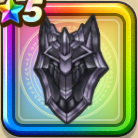

魔狼の盾
攻略班 6.5点 / シールドバッシュビッグシールド即死耐性+3%ドルマ属性斬撃・体技ダメージ+3%
くわしい特徴
【レベル別習得スキル】 Lv1シールドバッシュ（消費MP：10）盾でダメージを軽減しつつ、敵1体に威力180％の体技ダメージを与え、確率で転ばせる Lv8さいだいHP+5 Lv10ビッグシールド（消費MP：7）使用時含む5ターンの間、物理攻撃へのガード率を1段階上げる。最大2段階まで上がり、1段階で25％、2段階で50％ガード率が上昇する。 Lv15ドルマ属性斬撃・体技ダメージ+3% Lv18即死耐性+3% Lv23さいだいMP+5 Lv25ガード率+1% 【限界突破スキル】 1凸ドルマ属性耐性+5% 2凸ガード率+1% 3凸守備力+3 4凸ガード率+1%